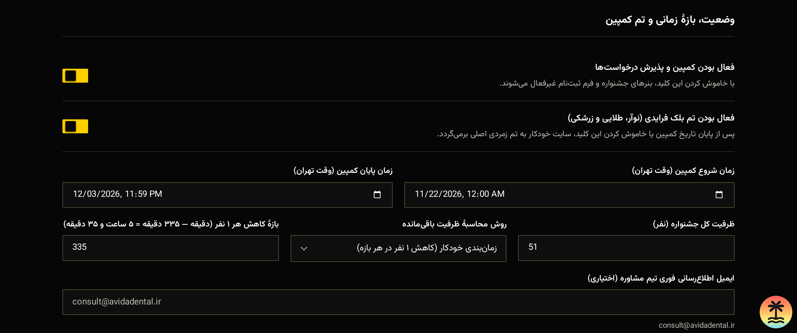
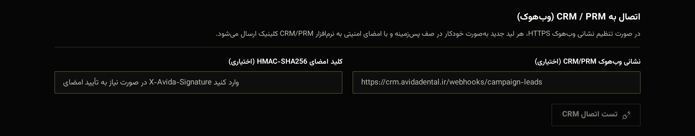
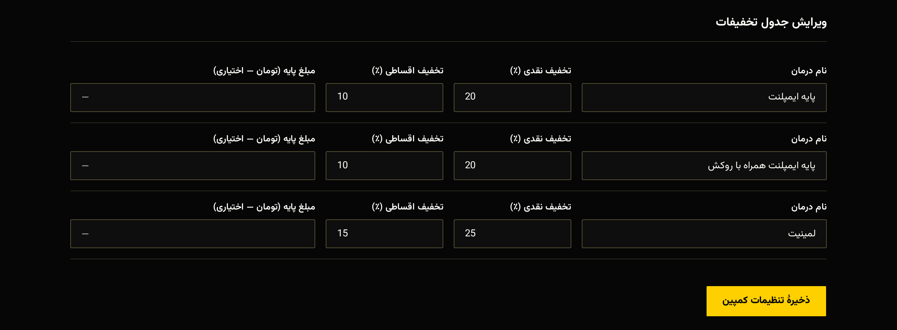

فصل۶
تنظیمات کمپین، ویرایش تخفیفات و اتصال CRM
کنترل وضعیت کمپین، تم، تاریخ و ظرفیت
تمام تنظیمات زمانبندی، ظرفیت و ظاهر جشنواره در زبانهٔ تنظیمات، مبالغ و CRM قرار دارد و بلافاصله پس از ذخیره روی سایت اعمال میشود.

- کلید فعال بودن کمپین و پذیرش درخواستها ۱ کل جشنواره را کنترل میکند؛ با خاموش کردن آن، نوار بالا، پنجرهٔ ورود، کاروسل صفحهٔ اصلی و فرم ثبتنام در
/black-fridayغیرفعال میشوند. - کلید فعال بودن تم بلک فرایدی (نوآر، طلایی و زرشکی) ۲ تنها ظاهر مشکی و زرد سایت را روشن یا خاموش میکند؛ در صورت خاموش کردن آن، جشنواره همچنان در
/black-fridayفعال میماند اما سایت با تم زمردی اصلی نمایش داده میشود. - زمان شروع کمپین (وقت تهران) و زمان پایان کمپین (وقت تهران) ۳ بازهٔ شمارش معکوس و پذیرش فرم را مشخص میکنند.
- در ردیف بعدی ۴، ظرفیت کل جشنواره (نفر) (پیشفرض ۵۱)، روش محاسبهٔ ظرفیت باقیمانده و بازهٔ کاهش هر ۱ نفر (دقیقه — ۳۳۵ دقیقه = ۵ ساعت و ۳۵ دقیقه) را تنظیم کنید.
- در کادر ایمیل اطلاعرسانی فوری تیم مشاوره (اختیاری) ۵ نشانی ایمیل مسئول مشاوره را بنویسید تا همزمان با ثبت هر لید جدید، ایمیل اطلاعرسانی ارسال شود.
نکتهٔ کلیدی
| روش | نحوهٔ کم شدن ظرفیت از ۵۱ نفر |
|---|---|
| زمانبندی خودکار (کاهش ۱ نفر در هر بازه) | از لحظهٔ شروع کمپین، در هر ۳۳۵ دقیقه (۵ ساعت و ۳۵ دقیقه) ۱ نفر بهصورت خودکار کم میشود تا ظرفیت طی ۱۲ روز بهتدریج به صفر برسد. |
| فقط بر اساس لیدهای تأییدشده | تنها زمانی که کارشناس وضعیت یک لید را در فصل ۳ روی رزرو نهایی بگذارد، ۱ نفر از ظرفیت کم میشود. |
| ترکیبی (بیشینهٔ زمانبندی و تأییدشده) | هر کدام از دو عدد بالا بزرگتر باشد ملاک قرار میگیرد؛ یعنی اگر رزروهای واقعی سریعتر از زمانبندی پیش بروند، ظرفیت واقعی سریعتر کم میشود. |
اتصال فرم به CRM / PRM کلینیک (وبهوک)
اگر کلینیک از نرمافزار CRM یا PRM با قابلیت دریافت وبهوک پشتیبانی میکند، میتوانید هر لید جدید را بهصورت خودکار و آنی به آن منتقل کنید.

- نشانی وبهوک CRM را در کادر نشانی وبهوک CRM/PRM (اختیاری) ۱ وارد کنید.
- در صورت نیاز به تأیید اصالت پیامها در سمت CRM، کلید مشترک را در کلید امضای HMAC-SHA256 (اختیاری) ۲ بنویسید؛ سامانه بدنهٔ درخواست را با سرآیند
X-Avida-Signatureامضا میکند و پس از ذخیره، متن کلید را برای امنیت دیگر در مرورگر نمایش نمیدهد. - ابتدا تغییرات صفحه را با دکمهٔ ذخیرهٔ تنظیمات کمپین در پایین صفحه ذخیره کنید.
- سپس روی تست اتصال CRM ۳ بزنید تا یک پیام آزمایشی ارسال شود و کد پاسخ و زمان پاسخگویی سرور CRM نمایش داده شود.
نکتهٔ کلیدی
ویرایش جدول تخفیفات و مبالغ پایه

- در هر ردیف درمان ۱ میتوانید نام درمان، تخفیف نقدی (٪) و تخفیف اقساطی (٪) را تغییر دهید.
- کادر مبلغ پایه (تومان — اختیاری) ۲ بهصورت پیشفرض خالی است. اگر مبلغ پایهٔ یک درمان را به تومان وارد کنید، در صفحهٔ
/black-fridayقیمت پایه (خطخورده) و مبلغ نهایی نقدی و اقساطی نیز زیر درصد تخفیف نمایش داده میشود. اگر مایل به نمایش قیمت نیستید، این کادر را خالی بگذارید. - در پایان، روی دکمهٔ ذخیرهٔ تنظیمات کمپین ۳ بزنید و منتظر پیام سبز تنظیمات و تخفیفات کمپین با موفقیت ذخیره شد. بمانید.
نکتهٔ کلیدی
رفع مشکل
| آنچه میبینید | چه باید کرد |
|---|---|
| پیام نشانی وبهوک CRM باید با https:// آغاز شود و دامنهٔ عمومی معتبر داشته باشد. | نشانی را با https:// و نام دامنهٔ معتبر سرور CRM اصلاح کنید و دوباره ذخیره بزنید. |
| دکمهٔ تست اتصال CRM خاموش است. | پس از وارد کردن نشانی وبهوک، ابتدا روی ذخیرهٔ تنظیمات کمپین در پایین صفحه بزنید تا نشانی ذخیره شود و دکمهٔ تست فعال گردد. |
| پیام خطای تاریخ پایان هنگام ذخیره نمایش داده میشود. | مطمئن شوید زمان پایان کمپین (وقت تهران) از زمان شروع کمپین (وقت تهران) دیرتر باشد. |
| تغییر درصد تخفیف یا تم بلافاصله در صفحهٔ دیگر مرورگر دیده نشد. | یک بار صفحهٔ عمومی را تازهسازی (F5) کنید؛ کش صفحهٔ عمومی هر یک دقیقه بهصورت خودکار بهروز میشود. |